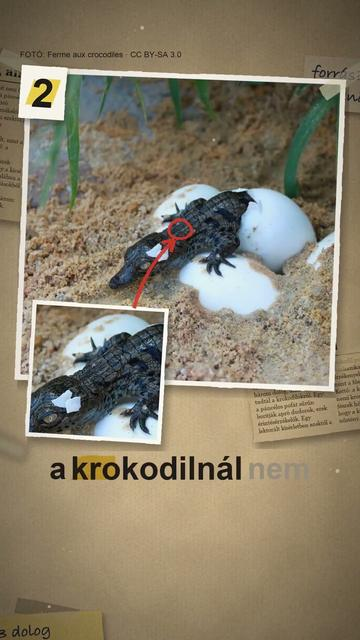

Megnézem a YouTube-on3 dolog, amit nem tudtál a krokodilokról
Röviden: A krokodil állkapcsát apró, kupolás érzékszervek borítják; egy 2012-es kísérlet (Journal of Experimental Biology, Mississippi-aligátor és nílusi krokodil) szerint ezek a páncélos bőr ellenére érzékenyebbé teszik az állkapcsot a mechanikai ingerre, mint a főemlősök ujjbegye.
A krokodil állkapcsát apró, kupolás érzékszervek borítják; egy 2012-es kísérlet (Journal of Experimental Biology, Mississippi-aligátor és nílusi krokodil) szerint ezek a páncélos bőr ellenére érzékenyebbé teszik az állkapcsot a mechanikai ingerre, mint a főemlősök ujjbegye. A krokodilfélék ivarát nem nemi kromoszóma, hanem a tojás keltetési hőmérséklete dönti el: általában a hűvösebb és a melegebb fészekből nőstény, a köztes hőmérsékleten főleg hím kel (Animals, 2024). Egy áttekintés (Herpetology Notes 7, 2014) szerint a fára mászás gyakori a krokodiloknál: a szerzők négy faj saját megfigyelését is közölték, és a mászás többféle célt szolgálhat.
Források
- Leitch, D. B. & Catania, K. C. (2012): Structure, innervation and response properties of integumentary sensory organs in crocodilians. Journal of Experimental Biology 215(23), 4217–4230
- Schilling-Tóth, B. M. et al. (2024): Temperature-Dependent Sex Determination in Crocodilians and Climate Challenges. Animals 14(13), 2015
- Dinets, V., Britton, A. & Shirley, M. (2014): Climbing behaviour in extant crocodilians. Herpetology Notes 7, 3–7
3 forrás · Hogyan ellenőrzünk?
Hibát találtál? Írd meg nekünk, megnézzük.
Képek és kreditek
Ez a videó a felhasznált CC BY-SA képek miatt CC BY-SA 4.0 licenc alatt érhető el (https://creativecommons.org/licenses/by-sa/4.0/).
• nílusi krokodil pofája az érzékelő pontokkal – shankar s. from Dubai, united arab emirates, CC BY 2.0 (https://creativecommons.org/licenses/by/2.0/) https://commons.wikimedia.org/?curid=69500573
• emberi ujjbegy – Frettie, CC BY 3.0 (https://creativecommons.org/licenses/by/3.0/) https://commons.wikimedia.org/?curid=6158485
• nílusi krokodilok a parton – ismeretlen, Public domain (https://creativecommons.org/publicdomain/mark/1.0/) https://commons.wikimedia.org/?curid=580139
• kikelő nílusi krokodil – Ferme aux crocodiles, CC BY-SA 3.0 (https://creativecommons.org/licenses/by-sa/3.0/) https://commons.wikimedia.org/?curid=30204667
• tojásból kibújó krokodilfióka – Veronik80000, CC BY-SA 4.0 (https://creativecommons.org/licenses/by-sa/4.0/) https://commons.wikimedia.org/?curid=55099401
• krokodilfiókák – shankar s. from Dubai, united arab emirates, CC BY 2.0 (https://creativecommons.org/licenses/by/2.0/) https://commons.wikimedia.org/?curid=68307123
• kikelő krokodil (rézkarc, Wellcome Collection) – Heath, Wellcome Collection, CC BY 4.0 (https://creativecommons.org/licenses/by/4.0/) https://commons.wikimedia.org/?curid=36547487
• Új-guineai krokodil (Crocodylus halli) egy fa ágán (illusztráció, nem a tanulmány megfigyelése) – ismeretlen szerző, CC BY 4.0 (https://creativecommons.org/licenses/by/4.0/) https://commons.wikimedia.org/?curid=199165589
• mocsári krokodil egy kidőlt fatörzsön (illusztráció) – Shaluka Herath, CC BY-SA 4.0 (https://creativecommons.org/licenses/by-sa/4.0/) https://commons.wikimedia.org/?curid=180770595
• napozó krokodil – Amaury Laporte, CC BY 2.0 (https://creativecommons.org/licenses/by/2.0/) https://commons.wikimedia.org/?curid=146716613
• nílusi krokodil a fák alatt – Timothy Akolamazima, CC BY-SA 4.0 (https://creativecommons.org/licenses/by-sa/4.0/) https://commons.wikimedia.org/?curid=119868803
• ausztráliai édesvízi krokodil – ismeretlen, CC BY 2.0 (https://creativecommons.org/licenses/by/2.0/) https://commons.wikimedia.org/?curid=46694165